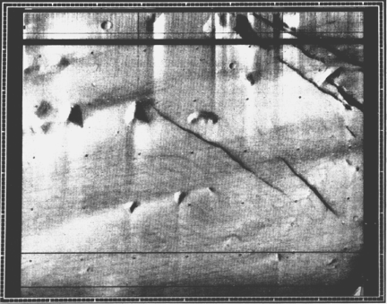

Fig. 986.052 Robot Camera Photograph of Tetrahedra on Mars: On their correct but awkward description of these gigantic polyhedra as "three-sided pyramids" the NASA scientists revealed their unfamiliarity with tetrahedra.
Copyright © 1997 Estate of R. Buckminster Fuller